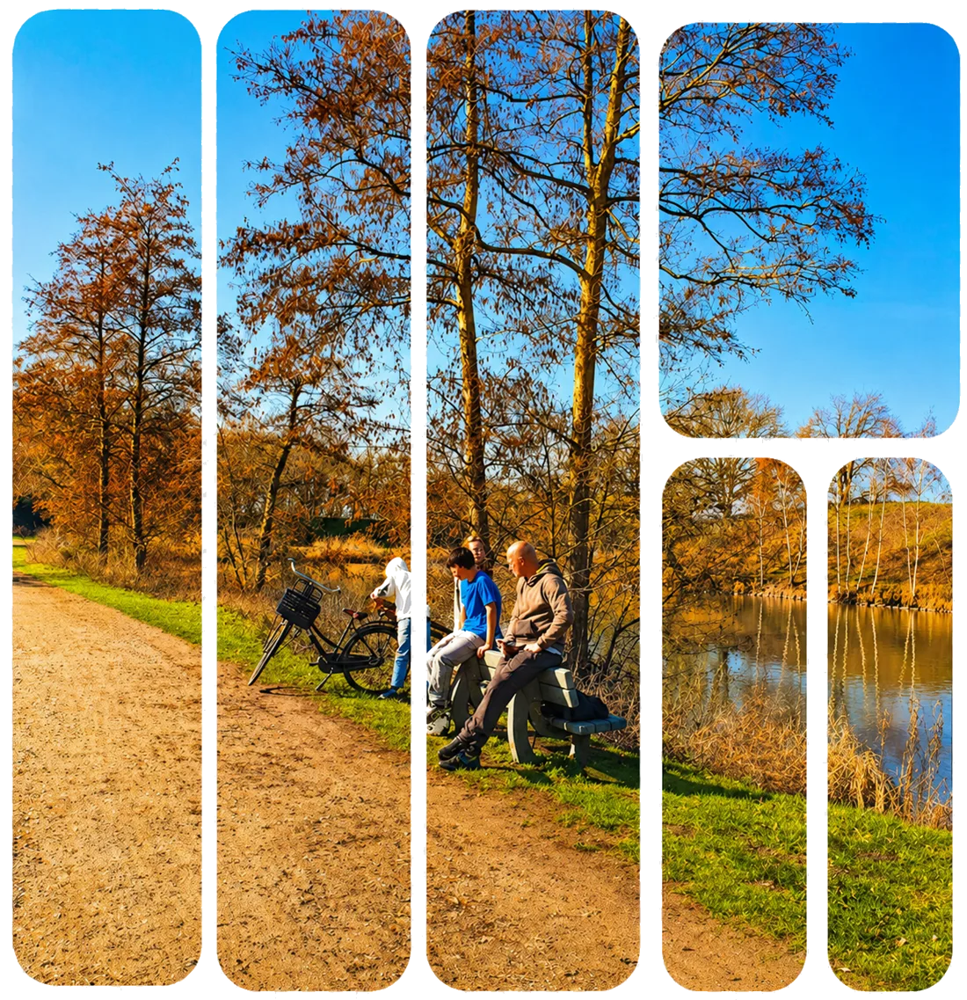

Work
NEXT
A Custom-Built Website for NEXT
A real client, a real brief, no template. My team of four was handed a client and a goal — we ran our own meetings, did our own research, and made every decision ourselves. Most teams reached for a free CMS. We hand-coded the site and built a fully custom admin from scratch, so the client got an editing experience shaped directly around what they asked for in our feedback sessions.

Process
How we got there
1. Then vs Now — Analysis
We started by mapping the client's current situation — how young people and parents found information about NEXT today — against the experience we wanted to create: calm, clear and easy to navigate.
2. Branding — Colour & Typography
For the visual identity, we chose a colour palette and typography that feel warm and approachable — reflecting NEXT's role as a safe, judgment-free space for young people, not a clinical institution.
3. Research & Inspiration
We looked at comparable youth-care and day-program organisations, studying how they build trust and stay approachable online, before settling on our own direction.
4. Flowchart & Low-fidelity Wireframes
Based on that research, we mapped the full site structure and sketched low-fidelity wireframes for every page, built around getting a young visitor to sign up as simply as possible.
5. High-fidelity Prototype & Delivery
Every earlier decision came together in a fully worked-out prototype — which we then built for real, custom backend and admin included, and handed over to the client.
Approach
Code over CMS
We already had hours of experience wrangling free CMS platforms and knew exactly where they fall short. So instead, we built NEXT's backend and admin panel ourselves — a real login, a real database, and content controls tailored to what the client actually wanted to change, not what a template allowed.
- Node.js + Express
- SQLite database
- Custom admin & CMS
- Authenticated login
- File uploads
- Email notifications
Live
See it in action
The site is live and deployed — built and shipped by the four of us, start to finish.
Visit the live site →Hosted on a free tier, so the first load can take a few seconds to spin up.